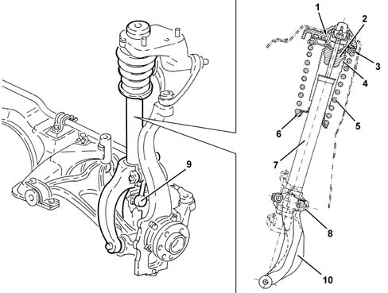

4410A front dampers and springs
- Path
- Descriptions > 44 SUSPENSION AND WHEELS > 4410 FRONT SUSPENSION > 4410A front dampers and springs
- Kind
- system description
- Applies to
- engines: 1.6 TS, 2.0 TS; all production periods
- Interactive page
- https://sloeber94.github.io/elrnDB-a147/en/#/3022500
Applies to: engines: 1.6 TS, 2.0 TS; all production periods
CONSTRUCTION FEATURES
SHOCK ABSORBERS
VIEW OF ASSEMBLY

1 - Assembly conicity 2 - 'CELLASTO' buffer 3 - Rubber ring 4 - Protective gaiter 5 - Spring 6 - Rubber ring 7 - Shock absorber 8 - Torsion bar link mounting bracket 9 - Torsion bar link 10 - Wheel hub mounting bracket
The front shock absorbers are double acting, hydraulic and pressurized to reduce operating noise.
To reduce the static sliding friction as much as possible, the stem guide anti-friction bushes have split seals, to offset the effect of the internal gas pressure, and are made with glass fibre reinforced Teflon. The shock absorber piston has a Teflon seal to improve sliding. The walls and spring support plate are made of reduced thickness high-tensile steel.
The top mounting is made with flexible isolation of the stem, which is separated from the spring support (by interposing a rubber pad) and the buffer. A tapered retaining system means eliminates the need to bolt the block to the body. This brings advantages in terms of assembly and reliability.
At the top of the shock absorber, there is a top end-of-travel buffer made of 'CELLASTO' (closed-cell polyurethane, a material which retains its original elasticity characteristics for a long time) which gradually intervenes as the limit position is reached.
The bottom of the shock absorber is anchored to a fork, which is secred to the suspension's lower track control arm. The torsion bar reaction link is also attached to the fork 4410C stabilizer bar and anchorage struts.
Springs
The coil springs are mounted offset in relation to the shock absorber's axis, to reduce sliding friction.
On the coils resting on the top and bottom plates, a rubber ring has been interposed to prevent noise during operation.